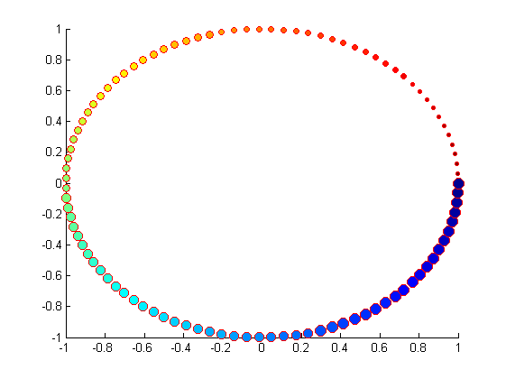
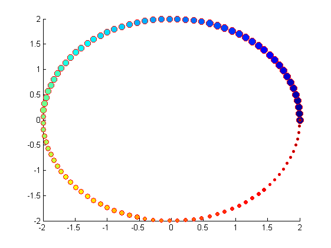
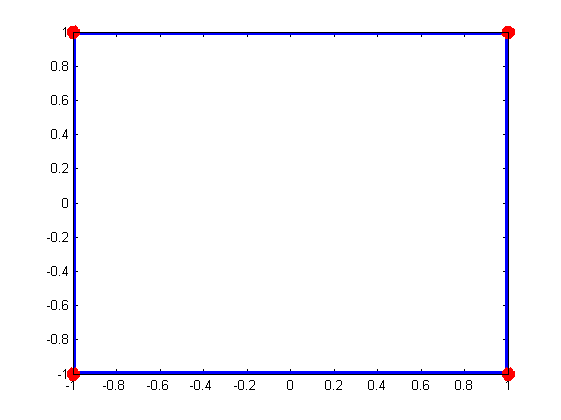
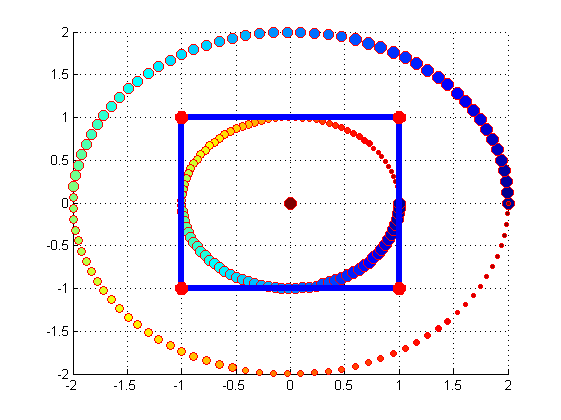

Contents
plot_scatter
Topic: This is a simple way to use plot,scatter,and hold. Author: LiXiaoBing email: lxb115416@163.com
clear and set time
clear all; % 清除所有变量 clc; % 清除命令行窗口 tic; % 放置时间
the fist figure：circle
theta=linspace(0,2*pi,100); % 圆的极坐标参数 极角 theta r=1; % 圆的极坐标参数 极径 r x=r*cos(theta); % 圆的直角坐标系参数 x轴 y=r*sin(theta); % 圆的直角坐标系参数 y轴 s = linspace(10,100,length(x)); % 散点图中各的大小 linespace的输出是以10为起点，100为终点，共x的长度个 c = linspace(1,0,length(x)); % 散点图中各点的颜色过渡 figure(1); % 画图窗 scatter(x,y,s,c,'fill','MarkerEdgeColor','r','LineWidth',1); % 作二维散点图scatter % 填充点fill 点边缘颜色MarkerEdgeColor 线宽LineWidth
the second figure: circle
r=2; x1=r*cos(theta); y1=r*sin(theta); s1 = linspace(100,10,length(x)); c1 = linspace(0,1,length(x)); figure(2); scatter(x1,y1,s1,c1,'fill','MarkerEdgeColor','r','LineWidth',1);
the third figure: squre
x2=[-1,-1,1,1,-1]; % 四边形四个顶点的 x轴分量 y2=[-1,1,1,-1,-1]; % 四边形四个顶点的 y轴分量 figure(3); plot(x2,y2,'b-*','LineWidth',5,'MarkerSize',10,'MarkerEdgeColor','r'); % b-color is blue, - is the solid line, * is the mark of vertex
the last: combine over all figure
figure(4); hold on; % 开始重叠所有的图 scatter(x,y,s,c,'fill','MarkerEdgeColor','r','LineWidth',1); scatter(x1,y1,s1,c1,'fill','MarkerEdgeColor','r','LineWidth',1); plot(x2,y2,'b-*','LineWidth',5,'MarkerSize',10,'MarkerEdgeColor','r'); scatter(0,0,100,1,'fill','MarkerEdgeColor','r','LineWidth',1); % a dot in the center of circle hold off; % 结束重叠 % zoom(2) grid on; % 网格
clear time and display some information
toc;
display('plot_scatter');
时间已过 3.283866 秒。 plot_scatter